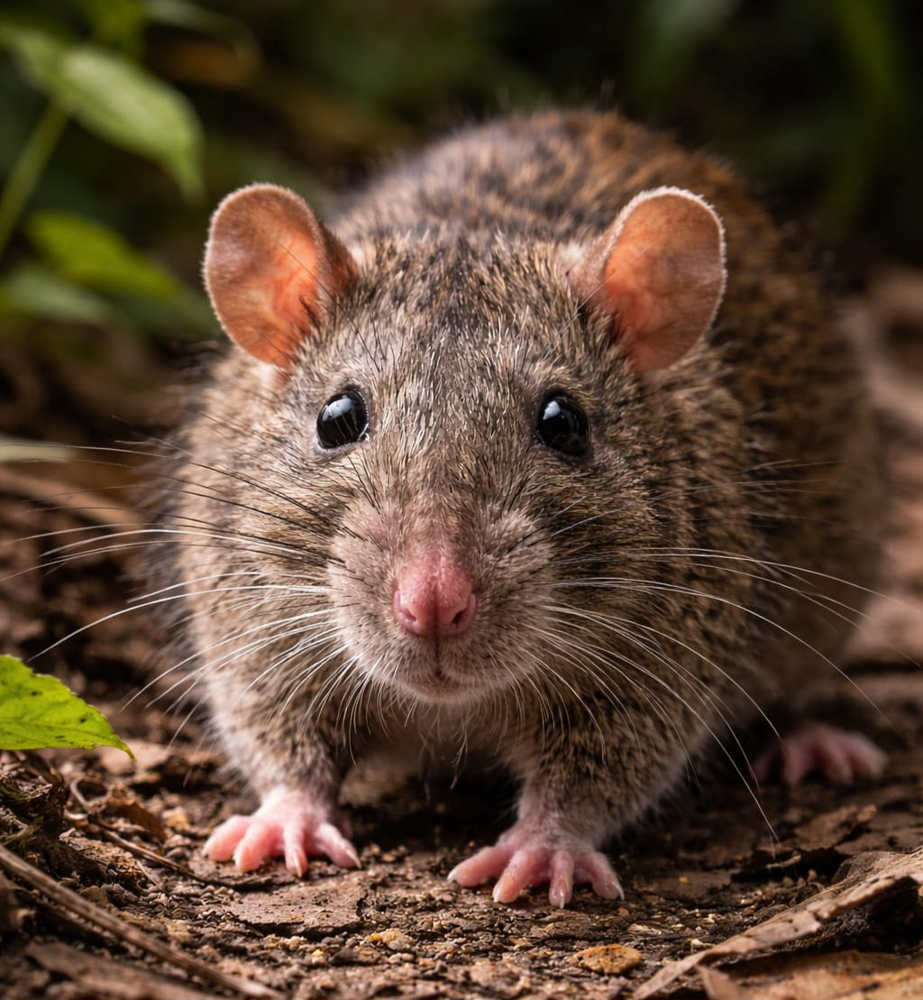

Control Profesional de Plagas

En Puerto Rico las dos especies principales de ratas asociadas a estructuras son:
También conocida como rata negra, es más ágil y excelente trepadora. Suele encontrarse en techos, áticos, árboles y estructuras elevadas. Tiene cuerpo más delgado y cola más larga que su cuerpo.
Es más grande y robusta. Prefiere áreas bajas como sótanos, desagües, almacenes y espacios a nivel del suelo. Excava madrigueras y suele encontrarse cerca de fuentes de agua.
En Bugs Or Us PR realizamos inspecciones detalladas para identificar la especie presente, localizar puntos de entrada y aplicar estrategias integradas de manejo de roedores, priorizando siempre la seguridad de su familia, sus mascotas y el medio ambiente.
Solicitar Servicio por WhatsApp